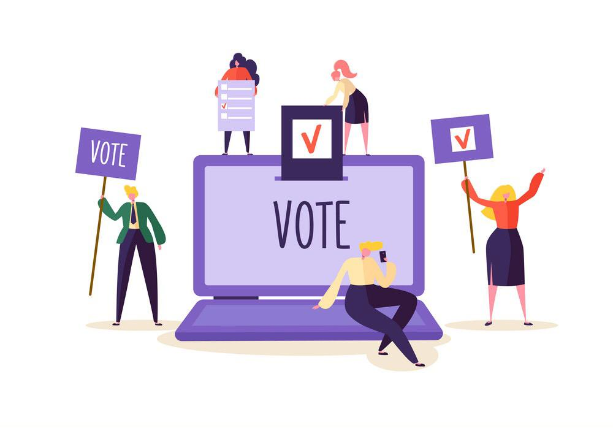
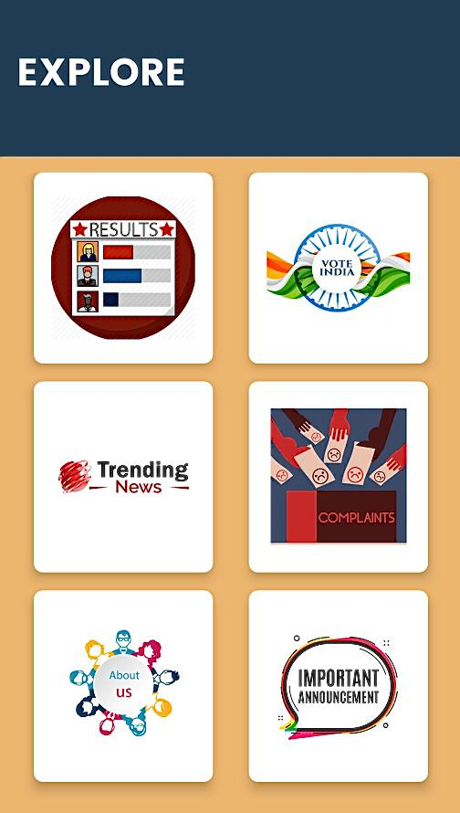

ONLINE VOTING
A way towards digitalized India

The main motive of creating MatDaan (e-voting) is to fulfill over the government word of
maintaining the social distancing in this pandemic of covid-19.
As MatDaan will give
people to cast their votes by sitting at their place and also not doing the gathering over a
place. Not only in this pandemic, application is useful after this covid-19. People who are
disabled or not able to go and cast their vote MatDaan will give them a platform to vote.
An electronic voting system which is used nowadays provide some characteristic
different from the traditional voting technique, and also it provides improved features of
voting system over traditional voting system such as accuracy, convenience, flexibility,
privacy, verifiability and mobility. E-voting solutions can increase the security of the
ballot, speed up the processing of results and make voting easier. This is a voting system
by which any voter can use his/her voting rights from anywhere in the country
About Features Of MatDaan
We are taking all the necessary features in the knowledege for this app some of them are
given bellow:
• Voters can vote remotely or during a meeting using their cellphone, computer, tablet.
•Voting is completed using a simple, easy to use, tech-friendly ballot.
• Help voters choose by including a biography, vision, campaign promises and contact
information.
• Personal voting keys are created and used only once.
• Proper security will be provided on the fraud voting.
• Provide fast results as compared to traditional voting system.